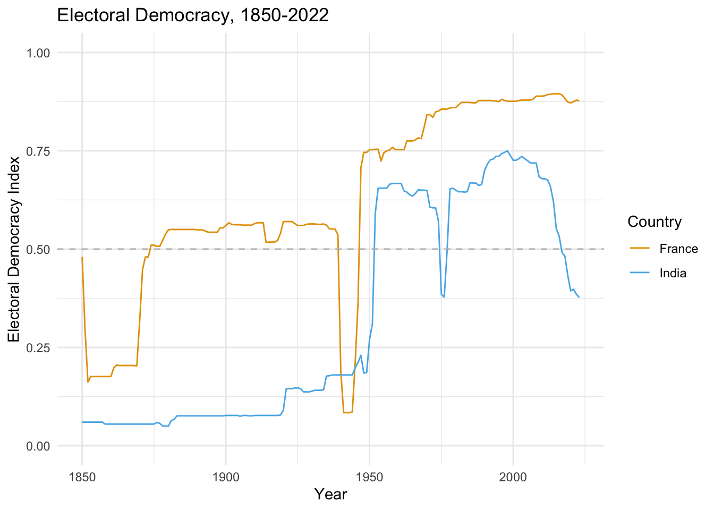
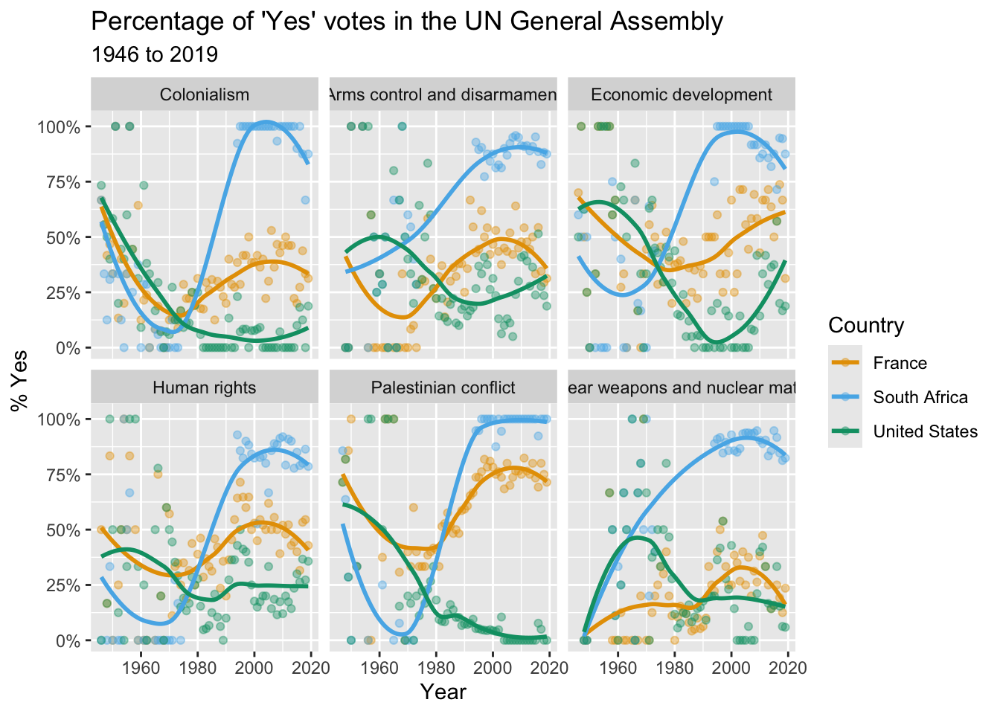

library(leaflet)
leaflet() %>%
addTiles() %>% # Add default OpenStreetMap map tiles
addMarkers(lat = 38.90243843683386, lng = -77.0443814477152,
label = "Elliott School of International Affairs")Getting Started
R and RStudio
All of our work for this course will be done in the R language and we will be working with R in RStudio. RStudio is an integrated development environment (IDE) develop by a company named Posit. Please be sure to download and install the most recent versions of R and R Studio from Posit’s website.
It is a good idea to periodically update R and RStudio. RStudio will prompt you when it is time to update and you can follow the same process of downloading and installing from the Posit website that we just did here. For R, there are a number of ways to do it, but the easiest is to use packages like installr for Windows and updateR for Mac. Here is a good blog post that walks you through the steps of how to update R using these packages. I usually update R once a semester.
We are going to be using a number of R packages throughout the course. One essential set of packages are those that comprise the Tidyverse, but especially readr, dplyr, ggplot2 and tidyr. You can install the entire Tidyverse collection of packages by typing install.packages("tidyverse") in your console. We will talk about these packages in detail as we go through the course, but have a look at this basic description now to gain some basic familiarity.
Another thing that you really want to do is to make sure that you have the native pipe operator (|>) enabled. In RStudio, go to Tools>Global Options, then go to Code and select “Use native pipe operator.”
While you are here, you can also go to Appearance to select a different editor theme or to Pane Layout to change how the four panes in R Studio are organized. Next, familiarize yourself with how to expand and minimize the four windows. The most important window that I want to highlight here is the source window. This is where we are going to be working most of the time in this course. And if I tell you to send your source code, I mean to send the file that you are working on in this window. This could be a Quarto document, an R script or an app.R file for a Shiny app.
The next window is the Console and there we also see tabs for Terminal and Background Jobs. The console is where you can run R code one line at a time. The terminal is relevant for more advanced users and we will make some use of it when we talk about publishing Quarto documents. Background Jobs is going to be helpful when we want troubleshoot a Quarto document that is not rendering properly.
From there, the next pane we want to explore is Environment, History, etc. Environment tells us what files are currently available to us. The other important tab here is Git which will be where we push things to GitHub. You will be using this a lot in the course.
Finally, we see a pane with Files, Plots, Packages etc. Files tells us what files are in our project folder and enables us to copy, and delete files associated with our project. Plots is a window for viewing our visualizations. And Packages shows us what packages are available and loaded into our environment.
Before you move on to the next section, take some time to familiarize yourself with the various user-friendly buttons and shortcuts available to you like the drop down menu for the pane layout, a spell checker, a button for inserting a code chunk and other features that you can play around with.
Running and Modifying Code
Next we are going to get our hands dirty by running and modifying some code. Create a folder for this class somewhere on your machine. Next, create a sub-folder called “classwork” and save week1-classwork.qmd in that folder.
Now open the week1-classwork.qmd file in RStudio, which has code for 3 data viz activities: map making; democracy over time; and UN voting patterns.
Follow the instructions in the .qmd file to update the code. Click Render to update your HTML output and examine. Complete as much as you can.
Alternatively, you can create your own .qmd file and copy and paste the code below into your file.
Example 1: Make a map!
Example 2: Plotting Democracy Over Time
# For nice colors that work for color blind
cbPalette <- c("#999999", "#E69F00", "#56B4E9", "#009E73", "#F0E442", "#0072B2", "#D55E00", "#CC79A7")
library(vdemdata)
library(ggplot2)
library(tidyverse)
# We will use the data called vdem
vdem %>%
# and then we are going to filter out and only use France and India
filter(country_name == "France" | country_name == "India") %>%
# and then we are going to only use years since 1850
filter(year > 1849) %>%
# and then we are going to use this filtered data to make a plot
#with democracy on the y axis and year on the x
# we want this plot to use different colors for each country
ggplot(., aes(y = v2x_polyarchy, x = year, color=country_name)) +
geom_line() +
theme_minimal() +
xlab("Year") +
ylab("Electoral Democracy Index") +
ggtitle("Electoral Democracy, 1850-2022") +
geom_hline(yintercept = .5, linetype = "dashed", color = "grey") +
scale_color_manual(name="Country", values=c("#E69F00", "#56B4E9")) +
ylim(0, 1)
Example 3: UN Voting Trends
# = c("tidyverse", "lubridate", "scales", "DT", "unvotes", "pacman")
library(tidyverse)
library(unvotes)
library(lubridate)
library(scales)
library(pacman)
unvotes <- un_votes %>%
inner_join(un_roll_calls, by = "rcid") %>%
inner_join(un_roll_call_issues, by = "rcid")
unvotes %>%
# then filter out to only include the countries we want
filter(country %in% c("South Africa", "United States", "France")) %>%
# then make sure R understands the the year variable is a data
mutate(year = year(date)) %>%
# Then group the data by country and year
group_by(country, year, issue) %>%
# then take the average Yes votes for each country_year
summarize(percent_yes = mean(vote == "yes")) %>%
# then make a nice plot
ggplot(mapping = aes(x = year, y = percent_yes, color = country)) +
geom_point(alpha = 0.4) +
geom_smooth(method = "loess", se = FALSE) +
facet_wrap(~issue) +
scale_y_continuous(labels = percent) +
scale_color_manual( values=c("#E69F00", "#56B4E9", "#009E73")) +
labs(
title = "Percentage of 'Yes' votes in the UN General Assembly",
subtitle = "1946 to 2019",
y = "% Yes",
x = "Year",
color = "Country"
)
Quarto
Once you have R, R Studio and Quarto installed, you are ready to start integrating text and code with Quarto. Quarto is an open source publishing platform that enables you to integrate text with code. If you have used R Markdown before then Quarto will look familiar to you because Quarto is the next generation of R Markdown.
RStudio comes with a version of Quarto already installed, but it can be useful to install the most recent version separately and because doing so will allow you to use Quarto with another IDE like VS Code. You can install the most recent version of Quarto by visiting this page and selecting the version for your operating system.
Now take a little time to create a Quarto project in R Studio and make sure everything is working properly. But before you get started, create a new folder(directory) for this course on your computer somewhere. Once that is done, go to File > New Project. Then select Quarto Project and name the project something like “test-project” in the Directory name field. Next, select Browse and navigate to the folder that you created for this course. Select Create Project.
You will notice that in your new project folder there is a file with an .Rproj extension. The .Rproj file is what tells RStudio which files are associated with the project and it obviates the need to set the working directory. It also makes it possible to share the folder with anyone who is running R and RStudio and have them run your code without having to set a working directory. This is what we refer to as a project-based workflow and we will use it for every assignment in this class.
Now try rendering the document with the Render toggle button. By default, Quarto renders an .html file that it will open in a browser and save to your project folder.
Next we want to try rendering a .pdf document. To do this, we have to install tinytex, a lightweight version of LaTeX. To do this, go to the Terminal and type quarto install tinytex. Now, change the format from html to pdf by inserting format: pdf in the YAML header. Then render the document again. A .pdf document should open up.
Now take a few minutes and try changing more of the code in the YAML header. You can try changing the title, adding a subtitle (subtitle:) or changing the execution options. By default, Quarto uses the visual editor but behind the scenes it is using Markdown. Try and edit some text using the toggle buttons available in the visual editor and then switch to Source to view the underlying Markdown code. Play with the R code chunks embedded in the document or try adding new code chunks.
You may already have some experience writing in Markdown, which is a lightweight markup language that enables you to format plaintext files. If you have not used Markdown, or if your memory is hazy, don’t worry: it is really easy to learn. Have a look at this Markdown cheat sheet and try to familiarize yourself with its basic syntax. Finally, take some time to get familiar with the Guide and Reference sections of the Quarto website. Then take a look at the gallery so that you can get an idea of the kinds of things you can produce with Quarto.